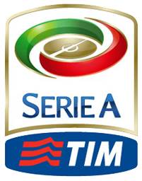

SERIE A

Serie A (Italian pronunciation: [ˈsɛːrje ˈa]), also called Serie A TIM due to sponsorship by Telecom Italia, is a professional league competition for football clubs located at the top of the Italian football league system and has been operating for over eighty years since the 1929–30 season. It had been organized by Lega Calcio until 2010, but a new league, the Lega Serie A, was created for the 2010–11 season. Serie A is regarded as one of the best football leagues in the world. Serie A was considered the best league in the world in the '90s, up until mid-2000. Serie A has produced the highest number of European Cup finalists: Italian clubs have reached the final of the competition on a record twenty-six different occasions, winning the title twelve times. Serie A is ranked 4th among European leagues according to UEFA's league coefficient behind the Spanish La Liga, English Premier League, and German Bundesliga, which is based on the performance of Italian clubs in the Champions League and the Europa League. It also ranked 5th in world according to the first trends of the 2011 IFFHS rating. In its current format, the Italian Football Championship was revised from having regional and interregional rounds, to a single-tier league from the 1929–30 season onwards. The championship titles won before 1929 are officially recognised by FIGC as a championship in the same way the ones since then are. The 1945–46 season, when the league was played over two geographical groups due to the ravages of WWII, is not statistically considered, even if its title is fully official. The league hosts three of the world's most famous clubs as Juventus, Milan and Internazionale, all founding members of the G-14, a group which represented the largest and most prestigious European football clubs; Serie A was the only league to produce three founding members. More players have won the coveted Ballon d'Or award while playing at a Serie A club than any other league in the world. Milan is one of two clubs with the most official international titles in the world. Juventus, Italy's most successful club of the 20th century and the most successful Italian team, is tied for fourth in Europe and eighth in the world in the same ranking. The club is the only one in the world to have won all possible official continental competitions and the world title. Internazionale, following their achievements in the 2009–10 season, became the first Italian team to have achieved The Treble.